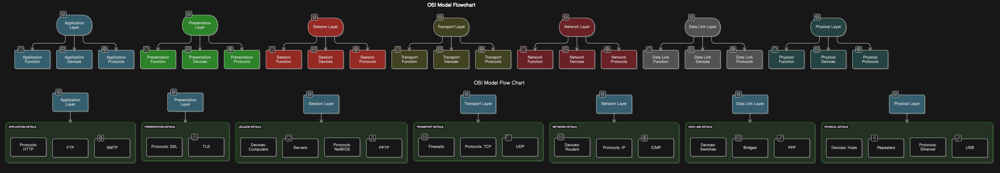
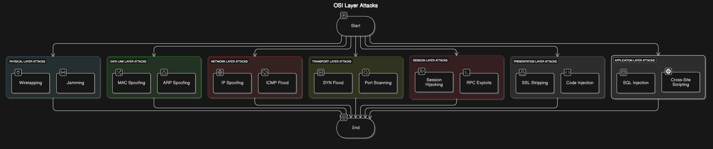
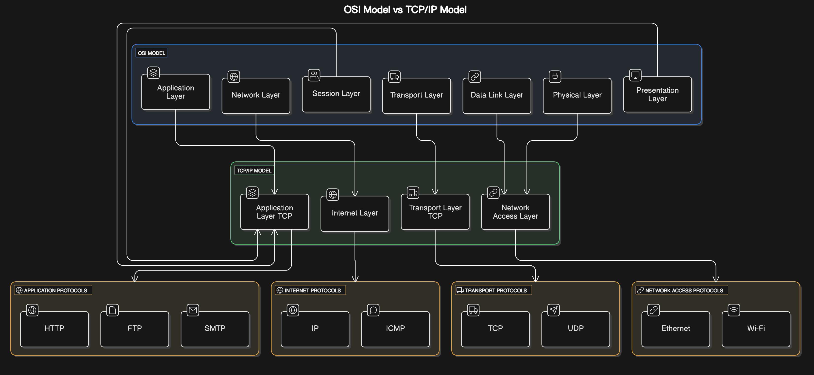

The OSI Model and Its Security Concerns
This is my undertanding of the OSI model
The OSI Model (Open Systems Interconnection Model) is a conceptual framework that standardizes how network devices communicate. It has seven layers, each serving a specific role in data transmission.
1. Physical Layer (Layer 1)
Function: Deals with the physical connection between devices. It defines cables, radio waves, and hardware transmission.
Devices/Technologies: Ethernet cables, fiber optics, hubs, repeaters.
Security Concern: Physical tampering, wiretapping, jamming attacks.
2. Data Link Layer (Layer 2)
Function: Handles error detection, framing, and MAC addressing. It ensures that data flows correctly between devices on the same network.
Devices/Technologies: Switches, MAC addresses, ARP (Address Resolution Protocol).
Security Concern: MAC spoofing, VLAN hopping attacks.
3. Network Layer (Layer 3)
Function: Determines the best path for data to travel. Uses logical addressing (IP addresses).
Devices/Technologies: Routers, IP addressing (IPv4, IPv6), ICMP (ping).
Security Concern: IP spoofing, DDoS attacks, route hijacking.
4. Transport Layer (Layer 4)
Function: Ensures complete data transfer using segmentation and reassembly. Manages TCP (connection-oriented) and UDP (connectionless) communication.
Devices/Technologies: Firewalls, TCP, UDP, ports.
Security Concern: Port scanning, SYN flood attacks.
5. Session Layer (Layer 5)
Function: Establishes, maintains, and terminates communication sessions between devices.
Devices/Technologies: APIs, sockets, NetBIOS.
Security Concern: Session hijacking, MITM (Man-in-the-Middle) attacks.
6. Presentation Layer (Layer 6)
Function: Formats, encrypts, and compresses data for the application layer.
Devices/Technologies: SSL/TLS, encryption standards (AES, RSA).
Security Concern: SSL/TLS vulnerabilities (e.g., downgrade attacks), insecure encryption.
7. Application Layer (Layer 7)
Function: Interfaces with the end user. It includes protocols for web browsing, email, and file transfer.
Devices/Technologies: HTTP/S, FTP, DNS, SMTP.
Security Concern: SQL injection, cross-site scripting (XSS), phishing.
Real-World Example (Penetration Testing Perspective)
Layer 1: Ensure there’s no unauthorized access to physical network devices.
Layer 2: Look for MAC spoofing or ARP poisoning opportunities.
Layer 3: Check for open ports and IP vulnerabilities.
Layer 4: Perform a SYN flood attack to test resilience.
Layer 5-7: Exploit web vulnerabilities like SQL injection, XSS, or weak SSL configurations.
OSI Model in Network Defense
Layer 1: Use of fiber-optic cables to prevent eavesdropping.
Layer 2: How VLAN segmentation can prevent internal threats.
Layer 3: IP filtering, firewalls, and VPNs for protecting routing.
Layer 4: Use of rate limiting, firewalls, and load balancing to protect from DoS attacks.
Layer 5: SSL/TLS encryption to protect session integrity.
Layer 6: Data encryption for protecting sensitive information.
Layer 7: Implement Web Application Firewalls and strong input validation.
Comparison of the OSI Model and TCP/IP Model
Network Protocols
Protocols are predefined rules that govern how data is formatted, transmitted, and processed to enable seamless communication between devices in a network. These protocols function across various layers within network models, each designed to manage specific data types and communication requirements.
Key Network Protocols
Network protocols define the rules for data exchange across networks, ensuring efficient and structured communication. Each protocol operates at a specific layer of the OSI model, managing different aspects of data transmission.
| Protocol | Description |
|---|---|
| HTTP (Hypertext Transfer Protocol) | Enables the transfer of web pages and online content. It functions at the Application Layer, allowing communication between browsers and web servers. |
| FTP (File Transfer Protocol) | Facilitates file transfers between systems, also operating at the Application Layer. It provides a method for uploading and downloading files from remote servers. |
| SMTP (Simple Mail Transfer Protocol) | Manages email transmission. As an Application Layer protocol, it ensures emails are sent from one server to another, reaching their intended recipients. |
| TCP (Transmission Control Protocol) | Provides reliable, connection-oriented communication with error checking and data recovery. Operating at the Transport Layer, it guarantees ordered and complete data delivery. |
| UDP (User Datagram Protocol) | Offers fast, connectionless communication without error recovery. Operating at the Transport Layer, it is ideal for applications prioritizing speed over reliability, such as streaming and gaming. |
| IP (Internet Protocol) | Handles packet addressing and routing across networks, ensuring data reaches the correct destination. It operates at the Internet Layer, guiding data through interconnected networks. |